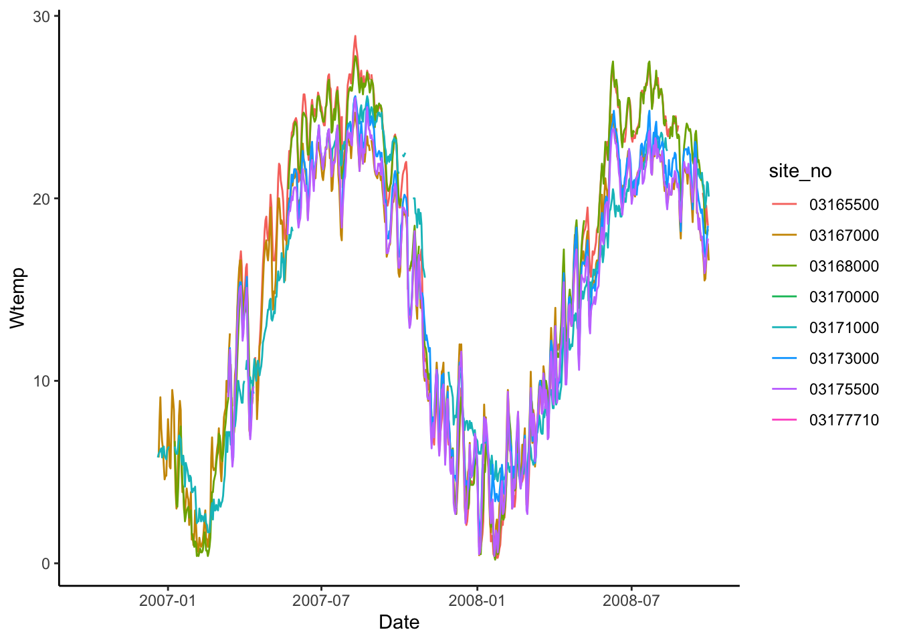
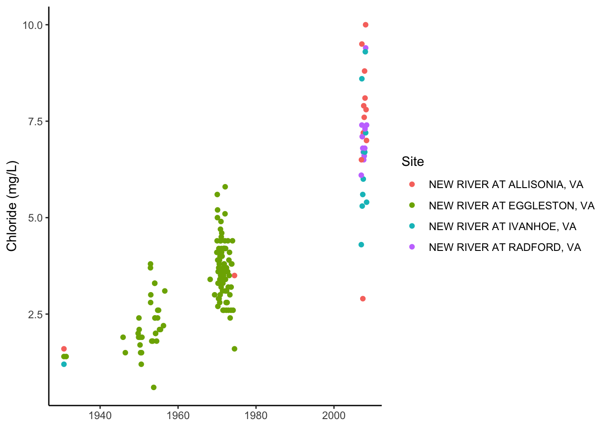

Chapter 7 Joins, Pivots, and USGS dataRetrieval
Get this document and a version with empty code chunks at the template repository on github: https://github.com/VT-Hydroinformatics/6-Get-Format-Plot-HydroData
Readings: Introduction to the dataRetrieval package https://cran.r-project.org/web/packages/dataRetrieval/vignettes/dataRetrieval.html
Chapter 12 & 13 of R for Data Science https://r4ds.had.co.nz/tidy-data.html
7.1 Goals for today
- Get familiar with the dataRetrieval package
- Intro to joins
- Learn about long vs. wide data and how to change between them
Prep question: How would you get data from the USGS (non-R)?
Install the dataRetrieval package. Load it and the tidyverse.
#install.packages("dataRetrieval")
library(dataRetrieval)
library(tidyverse)
library(lubridate)7.2 Exploring what dataRetrieval can do.
Think about the dataRetrieval as a way to interact with same public data you can access through waterdata.usgs.gov but without having to click on buttons and search around. It makes getting data or doing analyses with USGS data much more reproducible and fast!
To explore a few of the capabilities (NOT ALL!!) we will start with the USGS gage on the New River at Radford. The gage number is 03171000.
The documentation for the package is extremely helpful: https://cran.r-project.org/web/packages/dataRetrieval/vignettes/dataRetrieval.html
I always have to look up how to do things because the package is very specialized! This is the case with most website APIs, in my experience. It’s a good argument for getting good at navigating package documentation! Basically you just look through and try to piece together the recipe for what you want to do using the examples they give in the document.
First, let’s get information about the site using the readNWISsite() and whatNWISdata() functions. Try each out and see what they tell you.
Remember, all the parameter codes and site names get passed to dataRetrieval functions as characters, ao they must be in quotes.
#important: note the site number gets input as a character
site <- "03171000"
#Information about the site
siteinfo <- readNWISsite(site)
#What data is available for the site?
#Daily values, mean values
dataAvailable <- whatNWISdata(siteNumber = site, service = "dv", statCd = "00003")
dataAvailable## agency_cd site_no station_nm site_tp_cd dec_lat_va dec_long_va
## 2 USGS 03171000 NEW RIVER AT RADFORD, VA ST 37.14179 -80.56922
## 3 USGS 03171000 NEW RIVER AT RADFORD, VA ST 37.14179 -80.56922
## 4 USGS 03171000 NEW RIVER AT RADFORD, VA ST 37.14179 -80.56922
## coord_acy_cd dec_coord_datum_cd alt_va alt_acy_va alt_datum_cd huc_cd
## 2 U NAD83 1711.99 0.13 NAVD88 05050001
## 3 U NAD83 1711.99 0.13 NAVD88 05050001
## 4 U NAD83 1711.99 0.13 NAVD88 05050001
## data_type_cd parm_cd stat_cd ts_id loc_web_ds medium_grp_cd parm_grp_cd
## 2 dv 00010 00003 241564 NA wat <NA>
## 3 dv 00060 00003 145684 NA wat <NA>
## 4 dv 00095 00003 145685 NA wat <NA>
## srs_id access_cd begin_date end_date count_nu
## 2 1645597 0 2006-12-20 2009-03-18 704
## 3 1645423 0 1907-10-01 2022-03-30 33053
## 4 1646694 0 2006-12-20 2008-09-29 5347.3 Joins
When we look at what whatNWISdata returns, we see it gives us parameter codes, but doesn’t tell us what they mean. This is a common attribute of databases: you use a common identifier but then have the full information in a lookup file. In this case, the look-up information telling us what the parameter codes mean is in “parameterCdFile” which loads with the dataRetrieval package.
So, you could look at that and see what the parameters mean.
OR We could have R do it and add a column that tells us what the parameters mean. Enter JOINS!
Joins allow us to combine the data from two different data sets that have a column in common. At its most basic, a join looks for a matching row with the same key in both datasets (for example, a USGS gage number) and then combines the rows. So now you have all the data from both sets, matched on the key.
But you have to make some decisions: what if a key value exists in one set but not the other? Do you just drop that observation? Do you add an NA? Let’s look at the different options.
Take for example the two data sets, FlowTable and SizeTable. The SiteName values are the key values and the MeanFlow and WSsize values are the data.

Join Setup
Note River1 and River2 match up, but River3 and River5 only exist in one data set or the other.
The first way to deal with this is an INNER JOIN: inner_join() In an inner join, you only keep records that match. So the rows for River3 and River5 will be dropped because there is no corresponding data in the other set. See below:

Inner Join
But what if you don’t want to lose the values in one or the other or both?!
For instance, let’s say you have a bunch of discharge data for a stream, and then chemistry grab samples. You want to join the chemistry to the discharge based on the dates and times they were taken. But when you do this, you don’t want to delete all the discharge data where there is no chemistry! We need another option. Enter OUTER JOINS
LEFT JOIN, left_join(): Preserves all values from the LEFT data set, and pastes on the matching ones from the right. This creates NAs where there is a value on the left but not the right. (this is what you’d want to do in the discharge - chemistry example above)

Left Join
RIGHT JOIN, right_join(): Preserves all values from the RIGHT data set, and pastes on the matching ones from the left. This creates NAs where there is a value on the right but not the left.

Right Join
FULL JOIN, full_join(): KEEP EVERYTHING! The hoarder of the joins. No matching record on the left? create an NA on the right! No matching value on the right? Create an NA on the left! NAs for everyone!

Full Join
When you do this in R, you use the functions identified in the descriptions with the following syntax (see example below):
if the column is named the same in both data sets > xxx_join(left_tibble, right_tibble, by = “key_column”)**
if the column is named differently in both data sets > xxx_join(left_tibble, right_tibble, by = c(“left_key” = “right_key”)

Left Join Differing Col Names
Note in both of the above, when you specify which column to use as “by” you have to put it in quotes.
7.4 Join example
So in the chunk below let’s get add information about the parameters in dataAvailable by joining it with the key file: parameterCdFile. The column with the parameter codes is called parm_cd in dataAvailable and parameter_cd in parameterCdFile
dataAvailable <- left_join(dataAvailable, parameterCdFile, by = c("parm_cd" = "parameter_cd"))
dataAvailable## agency_cd site_no station_nm site_tp_cd dec_lat_va dec_long_va
## 1 USGS 03171000 NEW RIVER AT RADFORD, VA ST 37.14179 -80.56922
## 2 USGS 03171000 NEW RIVER AT RADFORD, VA ST 37.14179 -80.56922
## 3 USGS 03171000 NEW RIVER AT RADFORD, VA ST 37.14179 -80.56922
## coord_acy_cd dec_coord_datum_cd alt_va alt_acy_va alt_datum_cd huc_cd
## 1 U NAD83 1711.99 0.13 NAVD88 05050001
## 2 U NAD83 1711.99 0.13 NAVD88 05050001
## 3 U NAD83 1711.99 0.13 NAVD88 05050001
## data_type_cd parm_cd stat_cd ts_id loc_web_ds medium_grp_cd parm_grp_cd
## 1 dv 00010 00003 241564 NA wat <NA>
## 2 dv 00060 00003 145684 NA wat <NA>
## 3 dv 00095 00003 145685 NA wat <NA>
## srs_id access_cd begin_date end_date count_nu parameter_group_nm
## 1 1645597 0 2006-12-20 2009-03-18 704 Physical
## 2 1645423 0 1907-10-01 2022-03-30 33053 Physical
## 3 1646694 0 2006-12-20 2008-09-29 534 Physical
## parameter_nm
## 1 Temperature, water, degrees Celsius
## 2 Discharge, cubic feet per second
## 3 Specific conductance, water, unfiltered, microsiemens per centimeter at 25 degrees Celsius
## casrn srsname parameter_units
## 1 <NA> Temperature, water deg C
## 2 <NA> Stream flow, mean. daily ft3/s
## 3 <NA> Specific conductance uS/cm @25C#that made a lot of columns, let's clean it up
dataAvailClean <- dataAvailable %>% select(site_no,
station_nm,
parm_cd,
srsname,
parameter_units,
begin_date,
end_date)
dataAvailClean## site_no station_nm parm_cd srsname
## 1 03171000 NEW RIVER AT RADFORD, VA 00010 Temperature, water
## 2 03171000 NEW RIVER AT RADFORD, VA 00060 Stream flow, mean. daily
## 3 03171000 NEW RIVER AT RADFORD, VA 00095 Specific conductance
## parameter_units begin_date end_date
## 1 deg C 2006-12-20 2009-03-18
## 2 ft3/s 1907-10-01 2022-03-30
## 3 uS/cm @25C 2006-12-20 2008-09-297.5 Finding IDs to download USGS data
You can find sites via map and just enter the id like we did in the chunks above: https://maps.waterdata.usgs.gov/mapper/index.html
Below we will look at two other ways to get sites: using a bounding box of a geographic region, or search terms like State and drainage area
#find sites in a bounding box
#coords of bottom left, top right
swva <- c(-81.36, 36.72, -80.27, 37.32)
#get sites in this bounding box that have daily water temperature and discharge
swva_sites <- whatNWISsites(bBox = swva,
parameterCd = c("00060", "00010"),
hasDataTypeCd = "dv")
swva_sites## agency_cd site_no station_nm
## 1 USGS 03473500 M F HOLSTON RIVER AT GROSECLOSE, VA
## 2 USGS 03175140 WEST FORK COVE CREEK NEAR BLUEFIELD, VA
## 3 USGS 03177710 BLUESTONE RIVER AT FALLS MILLS, VA
## 4 USGS 03177700 BLUESTONE RIVER AT BLUEFIELD, VA
## 5 USGS 03166000 CRIPPLE CREEK NEAR IVANHOE, VA
## 6 USGS 03164500 NEW RIVER NEAR GRAYSON, VA
## 7 USGS 03165500 NEW RIVER AT IVANHOE, VA
## 8 USGS 03166880 WEST SP AT NAT FISH HAT NEAR GRAHAMS FORGE, VA
## 9 USGS 03166800 GLADE CREEK AT GRAHAMS FORGE, VA
## 10 USGS 03166900 BOILING SP AT NAT FISH HAT NR GRAHAMS FORGE, VA
## 11 USGS 03167000 REED CREEK AT GRAHAMS FORGE, VA
## 12 USGS 03175500 WOLF CREEK NEAR NARROWS, VA
## 13 USGS 03168500 PEAK CREEK AT PULASKI, VA
## 14 USGS 03168000 NEW RIVER AT ALLISONIA, VA
## 15 USGS 03167500 BIG REED ISLAND CREEK NEAR ALLISONIA, VA
## 16 USGS 03172500 WALKER CREEK AT STAFFORDSVILLE, VA
## 17 USGS 03173000 WALKER CREEK AT BANE, VA
## 18 USGS 03171500 NEW RIVER AT EGGLESTON, VA
## 19 USGS 03171000 NEW RIVER AT RADFORD, VA
## 20 USGS 03170000 LITTLE RIVER AT GRAYSONTOWN, VA
## 21 USGS 03169500 LITTLE RIVER NEAR COPPER VALLEY, VA
## site_tp_cd dec_lat_va dec_long_va colocated queryTime
## 1 ST 36.88873 -81.34733 FALSE 2022-03-31 11:04:38
## 2 ST 37.18428 -81.32982 FALSE 2022-03-31 11:04:38
## 3 ST 37.27151 -81.30482 FALSE 2022-03-31 11:04:38
## 4 ST 37.25595 -81.28177 FALSE 2022-03-31 11:04:38
## 5 ST 36.85984 -80.98036 FALSE 2022-03-31 11:04:38
## 6 ST 36.75985 -80.95619 FALSE 2022-03-31 11:04:38
## 7 ST 36.83485 -80.95258 FALSE 2022-03-31 11:04:38
## 8 SP 36.93429 -80.90313 FALSE 2022-03-31 11:04:38
## 9 ST 36.93095 -80.90036 FALSE 2022-03-31 11:04:38
## 10 SP 36.93068 -80.89619 FALSE 2022-03-31 11:04:38
## 11 ST 36.93901 -80.88730 FALSE 2022-03-31 11:04:38
## 12 ST 37.30568 -80.84980 FALSE 2022-03-31 11:04:38
## 13 ST 37.04734 -80.77618 FALSE 2022-03-31 11:04:38
## 14 ST 36.93762 -80.74563 FALSE 2022-03-31 11:04:38
## 15 ST 36.88901 -80.72757 FALSE 2022-03-31 11:04:38
## 16 ST 37.24179 -80.71090 FALSE 2022-03-31 11:04:38
## 17 ST 37.26818 -80.70951 FALSE 2022-03-31 11:04:38
## 18 ST 37.28957 -80.61673 FALSE 2022-03-31 11:04:38
## 19 ST 37.14179 -80.56922 FALSE 2022-03-31 11:04:38
## 20 ST 37.03763 -80.55672 FALSE 2022-03-31 11:04:38
## 21 ST 36.99652 -80.52144 FALSE 2022-03-31 11:04:38#find sites with other criteria, VA, less than 20 sqmi, other criteria can be used..
#check out the CRAN documentation
smallVA <- readNWISdata(service = "dv",
stateCd = "VA",
parameterCd = "00060",
drainAreaMax = "20",
statCd = "00003")7.6 OK let’s download some data!
We are going to use readNWISdv(), which downloads daily values.
We will tell it which sites to download, which parameters to download, and then what time period to download.
siteNumber gets the sites we want to download, USGS site numbers, as a character. We will use the swva_sites data we generated (yep, you can download multiple sites at once!)
startDate and endDate get the…. start and end dates. IMPORTANT: These must be in YYY-MM-DD format, but you don’t have to tell R they are dates before you give them to the function, it’ll do that for you.
parameterCd get the parameters you want to download. We want water temperature and discharge, which are “00060” and “00010,” respectively.
Once we have the data, the column names correspond to the keys that identify them, for example, discharge will be 00060 something something. Fortunately the dataRetrieval package also provides “renameNWISColumns()” which translates these into words, making them more easily understood by humans. We can pipe the results of our download to that function after we get the data to make the column names easier to understand.
start <- "2006-10-01"
end <- "2008-09-30"
params <- c("00010", "00060")
swva_dat <- readNWISdv(siteNumber = swva_sites$site_no,
parameterCd = params,
startDate = start,
endDate = end) %>%
renameNWISColumns()Let’s plot the water temperature data as a line and control the color of the lines with the different sites.
What could be better about this plot?
swva_dat %>% ggplot(aes(x = Date, y = Wtemp, color = site_no)) +
geom_line()## Warning: Removed 2218 row(s) containing missing values (geom_path).
We can add site names with….More joins! Our swva_sites data has the names of the sites in human-friendly language. The column in the downloaded data and in the swva_sites data is called “site_no” so we just give that to the “by” argument. Perform a left join to add the names of the sites to the data.
Then use select to remove some of the unnecessary columns.
Then make the plot and then snazz it up with labels and a non-junky theme.
swva_dat_clean <- left_join(swva_dat, swva_sites, by = "site_no") %>%
select(station_nm, site_no, Date, Flow, Wtemp, dec_lat_va, dec_long_va)
swva_dat_clean %>% ggplot(aes(x = Date, y = Wtemp, color = station_nm)) +
geom_line()+
ylab("Water temperature (deg C)")+
xlab(element_blank())+
labs(color = "Gage Site")+
theme_classic()## Warning: Removed 2218 row(s) containing missing values (geom_path).7.7 Pivoting: wide and long data
Okay, so with the data above: what would you do if you wanted to subtract the discharge or temperature of one gage from another on the same river: to compute rate of change between the two sites, for instance.
You could split them into two objects, then join based on date?
Or…now hear me out… you could PIVOT them.
A two-dimensional object can be either long or wide. Each has it’s advantages.
LONG
Each observation has it’s own row. In the first image below, the table on the left is long because each measure of “cases” has it’s own row. It’s year and country are identified by a second column, and the values in that column repeat a lot. (Look at country and year in the table on the left)
WIDE
Observations of different things have their own columns. In the second image below, notice in the right hand table there is a “cases” and “population” column rather than an identifier in a separate column like in the table on the left.
Why?
Long and wide data are more efficient for different things. Think about plotting a data set with 10 stream gages. If they are in a long format, you can just add color = Gage to your ggplot aes(). If they are in a wide format, meaning each gage has it’s own column, you’d have to write a new geom for EACH gage, because they’re all in separate columns.
Now imagine you want to do some math to create new data: let’s say cases divided by population in the second image below…. How would you even do that using the data on the left? With the wide data on the right it is simply mutate(casesPERpop = cases / population).
Finally, which table is easier to read in TABLE format (not a plot) in each of the two images below? Wide data is much more fitting for tables.
Pivoting to a longer format
Pivoting to a wider format
dplyr, part of the tidyverse, has functions to convert data between wide and long data. I have to look up the syntax every single time I use them. But they are VERY useful.
7.8 Pivot Examples
Back to our original question: I want to subtract the flow at Ivanhoe from the flow at Radford on the new river to see how much flow increases between the two sites through time.
To do this I am going to use pivot_wider() to give Ivanhoe and Radford discharges their own column.
First, we will use select to trim the data to just what we need, then call pivot_wider telling it which data to use for the new column names (names_from = station_nm) and what values we want to pivot into the data under those columns (values_from = Flow).
Then, subtract the two and make a plot!
#Pivot so we can compute diffs between one river and others
swva_wide <- swva_dat_clean %>% select(station_nm, Flow, Date) %>%
pivot_wider(names_from = station_nm, values_from = Flow)
swva_wide <- swva_wide %>% mutate(Radford_Ivanhoe = `NEW RIVER AT RADFORD, VA` - `NEW RIVER AT IVANHOE, VA`)
ggplot(swva_wide, aes(x = Date, y = Radford_Ivanhoe))+
geom_line()+
ggtitle("Change in flow from Ivanhoe to Radford")+
theme_classic()To further illustrate how to move between long and wide data and when to use them, let’s grab some water quality data. This process will also review some of the other concepts from this topic.
In the chunk below we will look to see what sites have data for nitrate and chloride in our swva bounding box from above. We will them filter them to just stream sites (leave out groundwater and springs). And finally we will download the nitrate and chloride data for those sites.
#Nitrate as nitrate and chloride
params <- c("00940", "71851")
#what sites in our bounding box have cloride and nitrate
swva_chem_sites <- whatNWISsites(bBox = swva,
parameterCd = params)
#filte to just stream water
swva_chem_sites <- filter(swva_chem_sites, site_tp_cd == "ST")
wqdat <- readNWISqw(siteNumber = swva_chem_sites$site_no,
parameterCd = params)## Warning: NWIS qw web services are being retired. Please see the vignette
## 'Changes to NWIS QW services' for more information.comment(wqdat)## [1] "#"
## [2] "# File created on 2022-03-31 11:04:44 EDT"
## [3] "#"
## [4] "# U.S. Geological Survey"
## [5] "# "
## [6] "# This file contains selected water-quality data for stations in the National Water "
## [7] "# Information System water-quality database. Explanation of codes found in this file are "
## [8] "# followed by the retrieved data. "
## [9] "#"
## [10] "# The data you have secured from the USGS NWISWeb database may include data that have "
## [11] "# not received Director's approval and as such are provisional and subject to revision. "
## [12] "# The data are released on the condition that neither the USGS nor the United States "
## [13] "# Government may be held liable for any damages resulting from its authorized or "
## [14] "# unauthorized use."
## [15] "#"
## [16] "# To view additional data-quality attributes, output the results using these options: "
## [17] "# one result per row, expanded attributes. Additional precautions are at:"
## [18] "# https://help.waterdata.usgs.gov/tutorials/water-quality-data/help-using-the-water-quality-data-retrieval-system#Data_retrievals_precautions"
## [19] "#"
## [20] "# agency_cd - Agency Code"
## [21] "# site_no - USGS site number"
## [22] "# sample_dt - Begin date"
## [23] "# sample_tm - Begin time"
## [24] "# sample_end_dt - End date"
## [25] "# sample_end_tm - End time"
## [26] "# sample_start_time_datum_cd - Time datum"
## [27] "# tm_datum_rlbty_cd - Time datum reliability code"
## [28] "# coll_ent_cd - Agency Collecting Sample Code"
## [29] "# medium_cd - Sample Medium Code"
## [30] "# project_cd - Project code"
## [31] "# aqfr_cd - Geologic unit code"
## [32] "# tu_id - Taxonomic unit code"
## [33] "# body_part_id - Body part code"
## [34] "# hyd_cond_cd - Hydrologic Cond Code"
## [35] "# samp_type_cd - Sample Type Code"
## [36] "# hyd_event_cd - Hydrologic Event Code"
## [37] "# sample_lab_cm_tx - Message from lab"
## [38] "# parm_cd - Parameter code"
## [39] "# remark_cd - Remark code"
## [40] "# result_va - Parameter value"
## [41] "# val_qual_tx - Result value qualifier code"
## [42] "# meth_cd - Method code"
## [43] "# dqi_cd - Data-quality indicator code"
## [44] "# rpt_lev_va - Reporting level"
## [45] "# rpt_lev_cd - Reporting level type"
## [46] "# lab_std_va - Lab standard deviation"
## [47] "# prep_set_no - Prep set number"
## [48] "# prep_dt - Result prep date"
## [49] "# anl_set_no - Analysis set number"
## [50] "# anl_dt - Result analysis date"
## [51] "# result_lab_cm_tx - Lab result comment"
## [52] "# anl_ent_cd - Analyzing entity code"
## [53] "#"
## [54] "# The following parameters are included:"
## [55] "# 00940 - Chloride, water, filtered, milligrams per liter"
## [56] "# 71851 - Nitrate, water, filtered, milligrams per liter as nitrate"
## [57] "#"
## [58] "# Description of sample_start_time_datum_cd:"
## [59] "# EST - Eastern Standard Time"
## [60] "# EDT - Eastern Daylight Time"
## [61] "#"
## [62] "# Description of tm_datum_rlbty_cd:"
## [63] "# K - Known"
## [64] "# T - Transferred"
## [65] "#"
## [66] "# Description of coll_ent_cd and anl_ent_cd:"
## [67] "# USGS-WRD - U.S. Geological Survey-Water Resources Discipline"
## [68] "# USGS-NYL - USGS-NY WSC Low Ionic Strength Lab,Troy(formerly Albany)"
## [69] "#"
## [70] "# Description of medium_cd:"
## [71] "# WS - Surface water"
## [72] "#"
## [73] "# Description of aqfr_cd:"
## [74] "#"
## [75] "# Description of tu_id:"
## [76] "# https://www.itis.gov/"
## [77] "#"
## [78] "# Description of body_part_id:"
## [79] "#"
## [80] "# Description of hyd_cond_cd:"
## [81] "# 4 - Stable, low stage"
## [82] "# 5 - Falling stage"
## [83] "# 6 - Stable, high stage"
## [84] "# 8 - Rising stage"
## [85] "# 9 - Stable, normal stage"
## [86] "# A - Not determined"
## [87] "#"
## [88] "# Description of samp_type_cd:"
## [89] "# 7 - Replicate"
## [90] "# 9 - Regular"
## [91] "#"
## [92] "# Description of hyd_event_cd:"
## [93] "# 9 - Routine sample"
## [94] "#"
## [95] "# Description of remark_cd:"
## [96] "#"
## [97] "# Description of val_qual_tx:"
## [98] "#"
## [99] "# Description of meth_cd:"
## [100] "# ALGOR - Computation by NWIS algorithm"
## [101] "# CL031 - Chloride, wf, ASF thiocyanate"
## [102] "# IC022 - Anions, wf, IC"
## [103] "# IC034 - Anions, wf, IC (USGS-NYL)"
## [104] "#"
## [105] "# Description of dqi_cd:"
## [106] "# A - Historical data"
## [107] "# R - Reviewed and approved"
## [108] "#"
## [109] "# Description of rpt_lev_cd:"
## [110] "# MRL - Minimum reporting level"
## [111] "#"
## [112] "# Data for the following sites are included:"
## [113] "# USGS 03165500 NEW RIVER AT IVANHOE, VA"
## [114] "# USGS 03167000 REED CREEK AT GRAHAMS FORGE, VA"
## [115] "# USGS 03167500 BIG REED ISLAND CREEK NEAR ALLISONIA, VA"
## [116] "# USGS 03168000 NEW RIVER AT ALLISONIA, VA"
## [117] "# USGS 03168500 PEAK CREEK AT PULASKI, VA"
## [118] "# USGS 03170000 LITTLE RIVER AT GRAYSONTOWN, VA"
## [119] "# USGS 03171000 NEW RIVER AT RADFORD, VA"
## [120] "# USGS 03171500 NEW RIVER AT EGGLESTON, VA"
## [121] "# USGS 03172500 WALKER CREEK AT STAFFORDSVILLE, VA"
## [122] "# USGS 03173000 WALKER CREEK AT BANE, VA"
## [123] "# USGS 03175500 WOLF CREEK NEAR NARROWS, VA"
## [124] "# USGS 03473500 M F HOLSTON RIVER AT GROSECLOSE, VA"
## [125] "# USGS 371852081031201 006.0 EAST RIVER NEAR ENGLESIDE, W. VA."
## [126] "# USGS 370853081003801 AT 23045 UNNAMED EPHEMERAL TRIB TO WALKER CREEK VA"
## [127] "# USGS 370941081005201 AT 23045.5 UNNAMED INTERMIT TRIB TO KIMBERLING CR"
## [128] "# USGS 370847081055101 AT 23046 KIMBERLING CREEK VA"
## [129] "# USGS 371250080511401 AT 22014 DISMAL CREEK VA"
## [130] "# USGS 370534081144701 AT 22013 HUNTING CAMP CREEK VA"
## [131] "# USGS 370603081120801 AT 22013.5 LAUREL CR AT MOUTH OF LITTLE WOLF CR VA"
## [132] "#"Now, let’s clean things up a bit.
Join the parameter names from parameterCdFile and then join the site names from swva_chem_site. Then select just the columns we want, and finally filter the remaining data to just look at sites from the New River.
To illustrate the functionality of the data in this format, plot Chloride for each site, and then plot Chloride AND Nitrate, using the parameter name in facet_wrap.
wqdat_clean <- wqdat %>%
left_join(parameterCdFile, by = c("parm_cd" = "parameter_cd")) %>%
left_join(swva_chem_sites, by = "site_no") %>%
select(station_nm, sample_dt, sample_tm, result_va, srsname, parameter_units) %>%
filter(str_detect(station_nm, "NEW RIVER"))
wqdat_clean %>% filter(srsname == "Chloride") %>%
ggplot(aes(x = sample_dt, y = result_va, color = station_nm)) +
geom_point()+
ylab("Chloride (mg/L)")+
xlab(element_blank())+
labs(color = "Site")+
theme_classic()
wqdat_clean %>%
ggplot(aes(x = sample_dt, y = result_va, color = station_nm)) +
geom_point()+
facet_wrap(facets = "srsname", nrow = 2)+
ylab("Concentration (mg/L)")+
xlab(element_blank())+
labs(color = "Site")+
theme_classic()
Now let’s say we want to calculate something with chloride and nitrate. We need to make the data wide so we have a nitrate column and a chloride column. Do that below. What goes into values_from? what goes into names_from?
Next, plot Chloride + Nitrate. Could you do this with the data in the previous format?
Finally, use pivot_longer to transform the data back into a long format. Often you’ll get data in a wide format and need to convert it to long, and we haven’t tried that yet. The only argument you’ll need to pass to pivot_longer() in this case is to tell it what columns to turn into the new DATA column (using the cols = ) parameter.
#make wqdat_clean wide
wqdat_wide <- wqdat_clean %>% select(-parameter_units) %>%
pivot_wider(values_from = result_va, names_from = srsname)
ggplot(wqdat_wide, aes(x = sample_dt, y = Chloride + Nitrate)) +
geom_point()## Warning: Removed 106 rows containing missing values (geom_point).
wqlonger <- wqdat_wide %>%
pivot_longer(cols = c("Chloride", "Nitrate"))